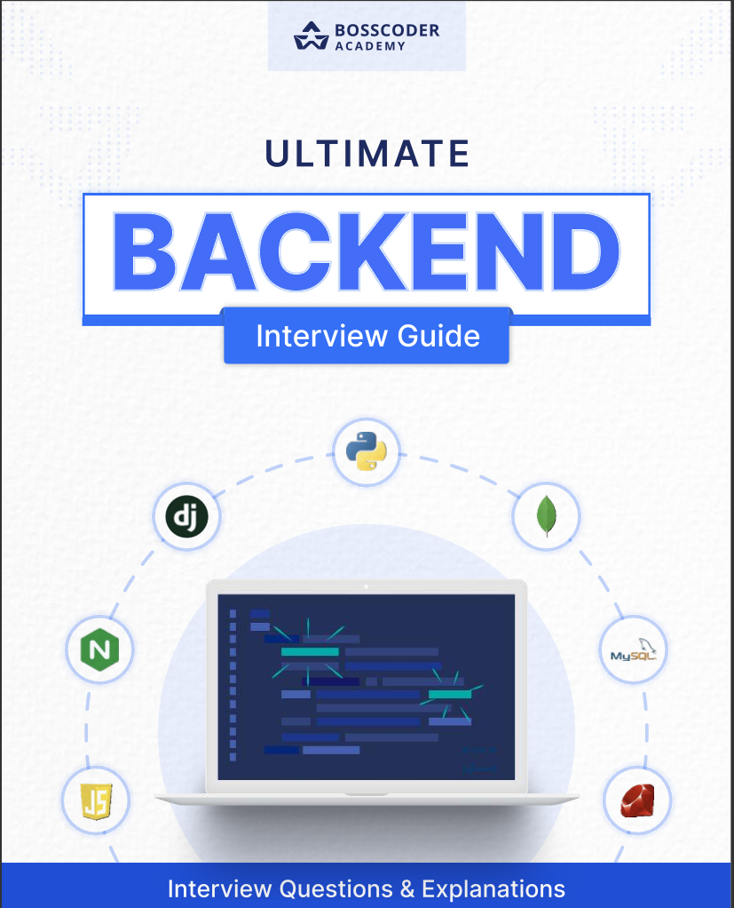
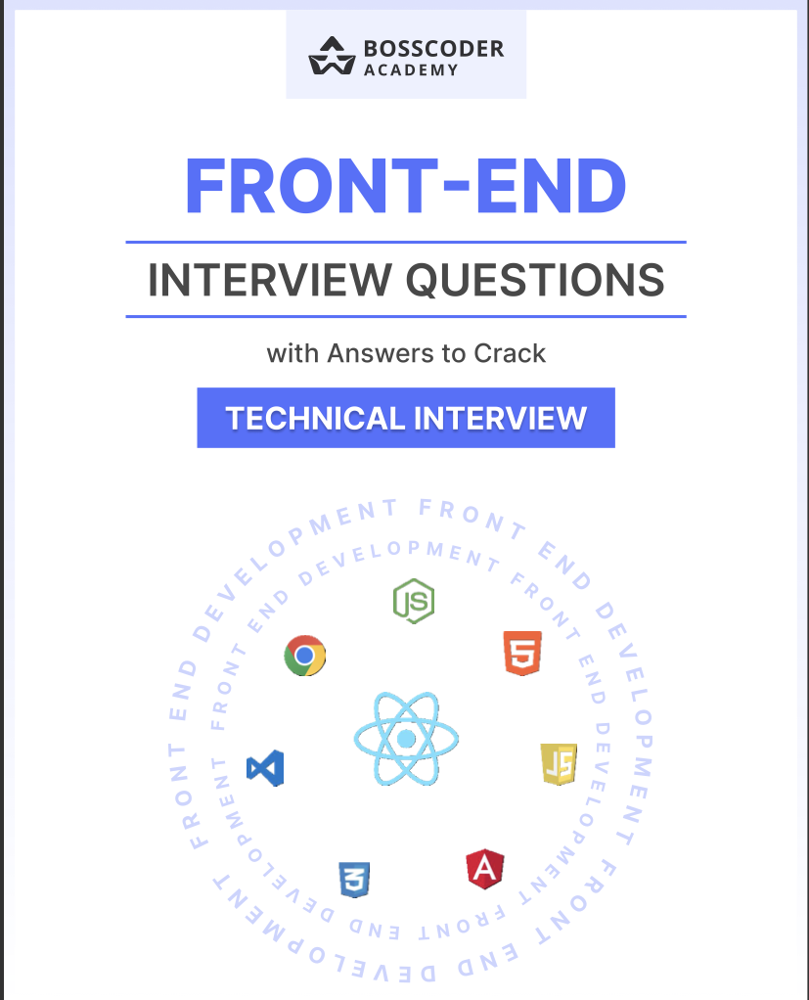
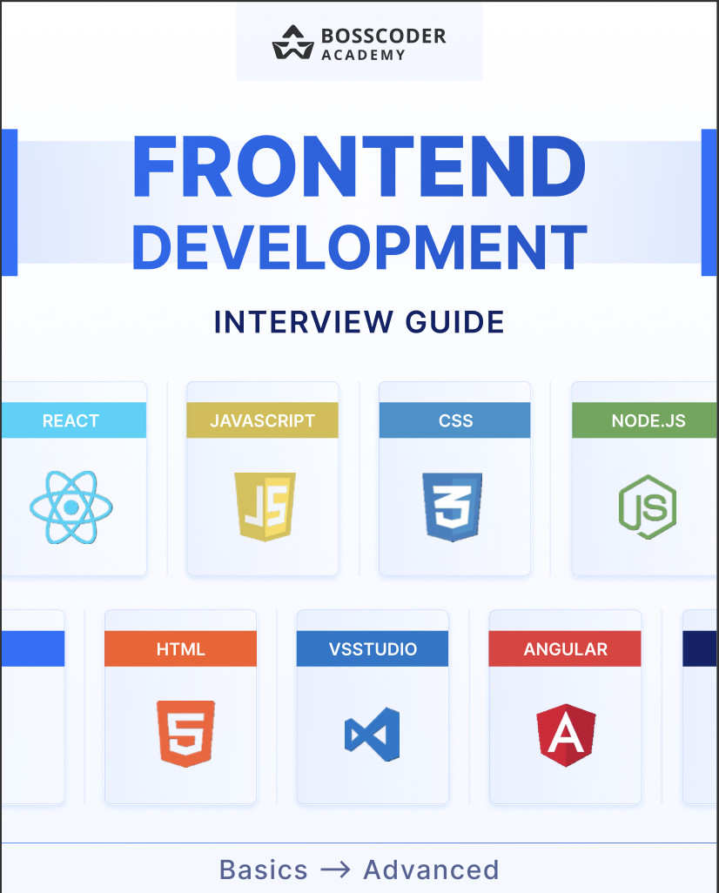
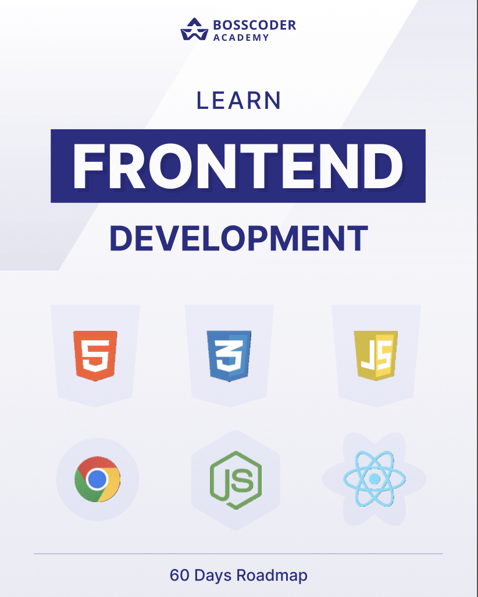
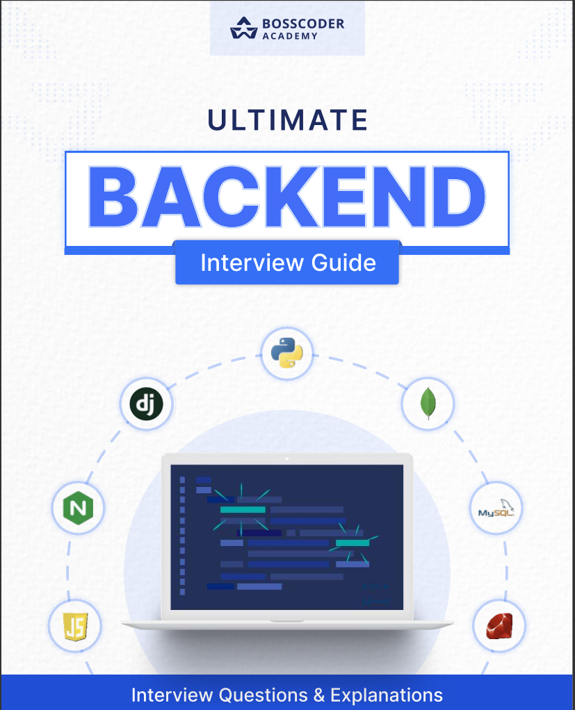
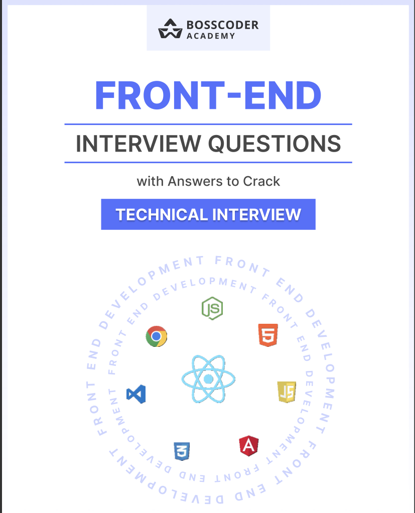
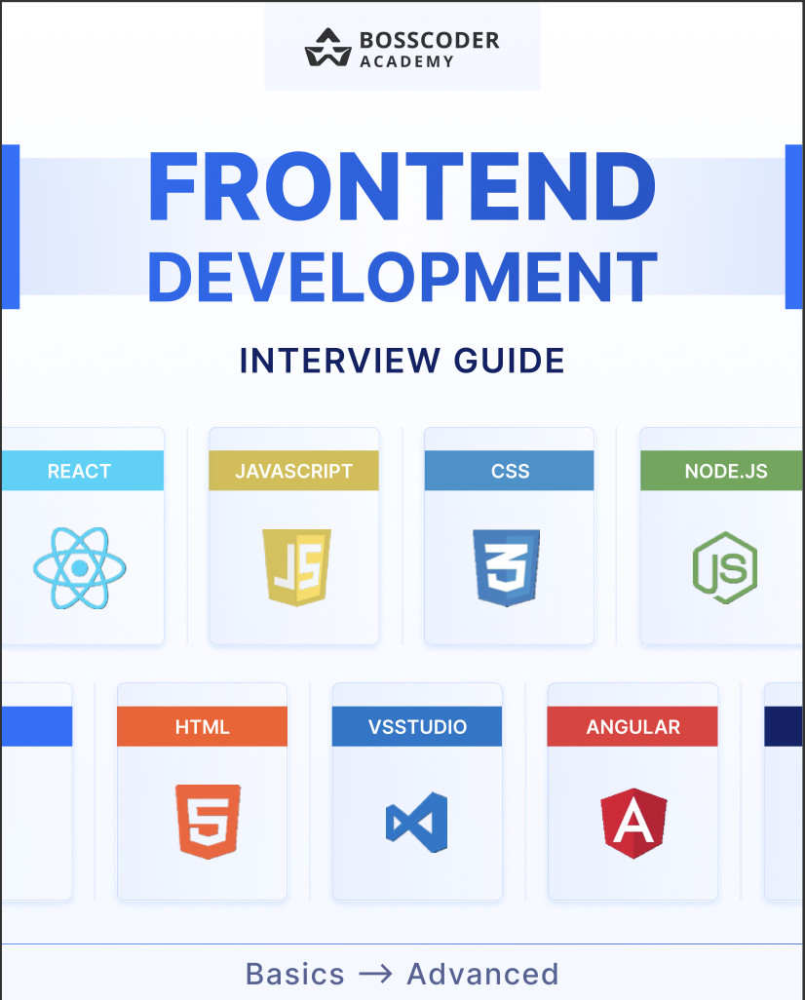
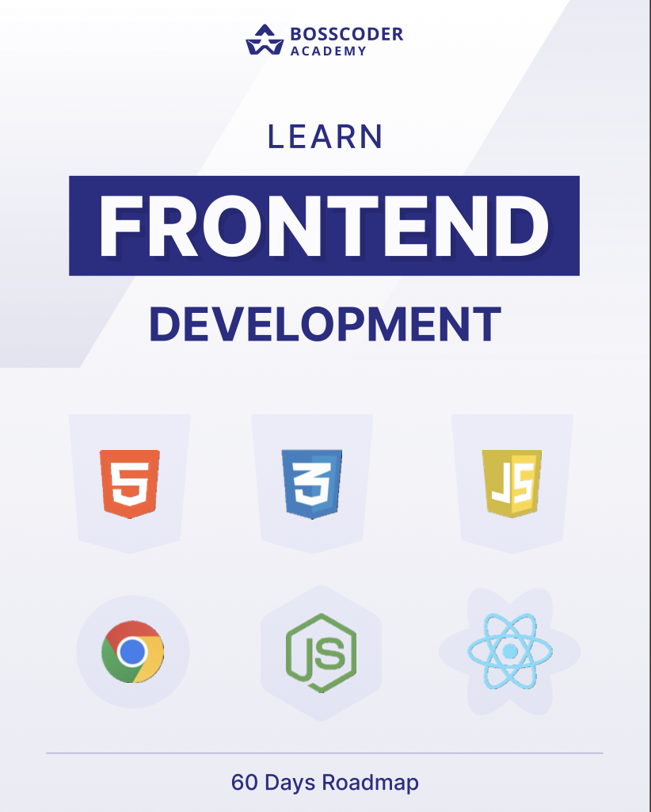

Young TEDx speaker and #1 Online JEE Educator | Founder of 5 YouTube
Channels with 2.5 million young hustlers.
I help students across India find their right career path. I have been
a guest speaker at 22 Colleges including Top IITs, BITS Pilani,
IIIT's, NIT's, SRCC, Jadavpur University etc. I am the #1 Educator of
JEE on India's biggest online platform and I believe that everyone has
the right to quality education and with the help of my social media
platforms, I have helped millions of students find their path to
success in the last 5 years. In the next few decades, India will rise
as the leader of the world with the maximum young workforce, but for
this, we need some good pilots who can take us through this. I help
these young hustlers find their true potential so that they can fly us
to victory.
 






